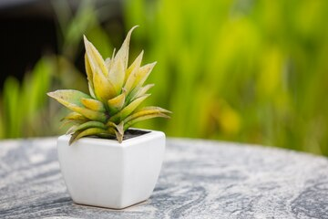

Step 1: Prepare the Pot
Take your plant pot (not included in the kit). Fill it with soil that you have on hand until it's about 2 inches from the top. Ensure the soil is even and well-packed to support the seed bomb.
Step 2: Place the Seed Bomb
Take the seed bomb provided in the kit and gently place it on the soil surface. Do not bury the seed bomb entirely; let it rest slightly on top with some soil sprinkled over it.

Step 3: Water the Plant Lightly
Water the pot gently. Use a small cup or watering can to moisten the soil and the seed bomb. Avoid overwatering to prevent seed damage. Maintain consistent moisture for healthy germination.
Step 4: Apply Medicine & Manure and Place in a Well-Lit Spot
Mix the provided plant medicine with water as per the instructions in the kit. Spray or pour it gently into the pot to enhance growth and protect the plant from pests. Place the pot in a well-lit area that gets indirect sunlight for optimal growth.
